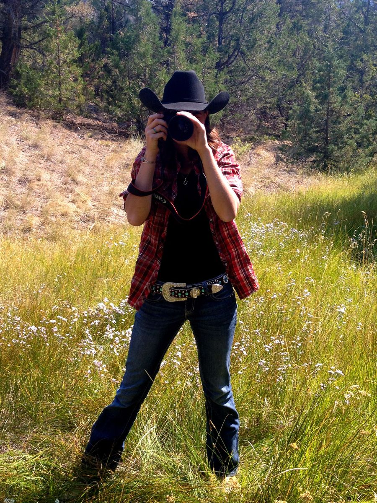

Meet Jessie

The West, as I see it
Hi, I'm Jessie Cloutier, the eye behind J. Cloutier Photography. Living out West, I'm endlessly inspired by its raw beauty — the open skies, weathered landscapes, and untamed spirit that define this place.
My work is about capturing the true West — not just the scenery, but the stories, the grit, and the quiet moments that often go unnoticed. With each frame, I aim to blend authenticity and artistry, turning fleeting light and vast horizons into lasting images.
Whether it's a dusty trail at dawn or a thunderstorm rolling over the plains, my lens seeks the real, unfiltered essence of the western experience. This is the West as I see it — wild, honest, and full of soul.
Stories from the Saddle & the Sky
Out in the World
A growing body of work, shared with collectors and fellow lovers of the West.

Bring the West Home
Professional fine-art prints, made to order from Jessie's Western collection.
Explore Prints